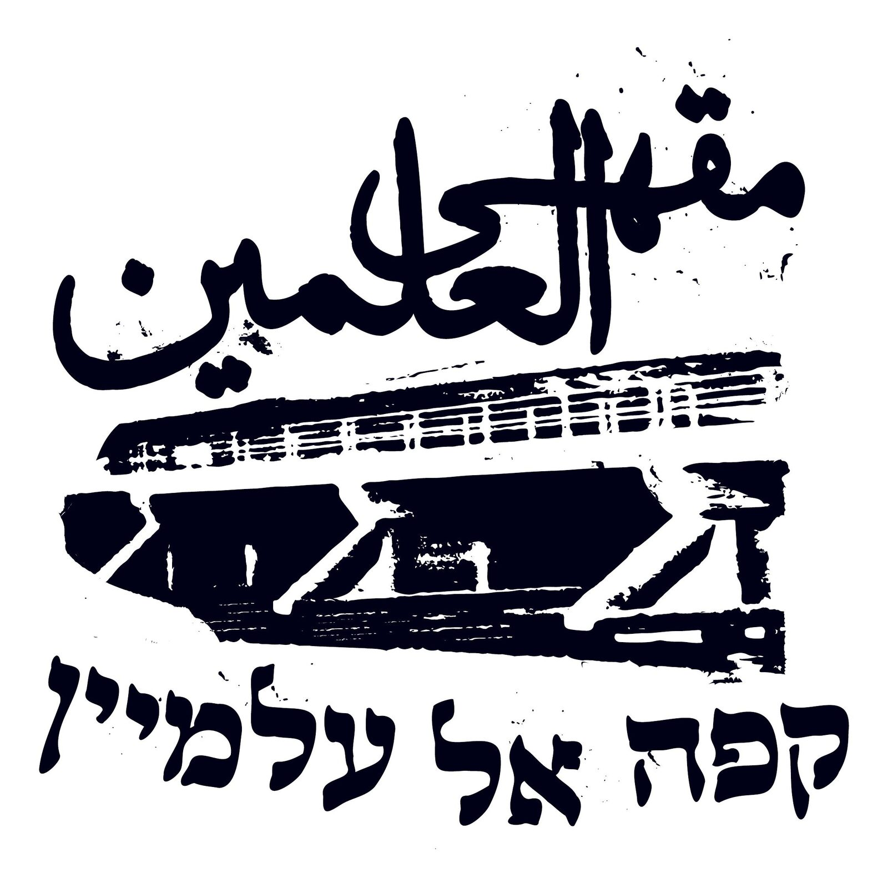
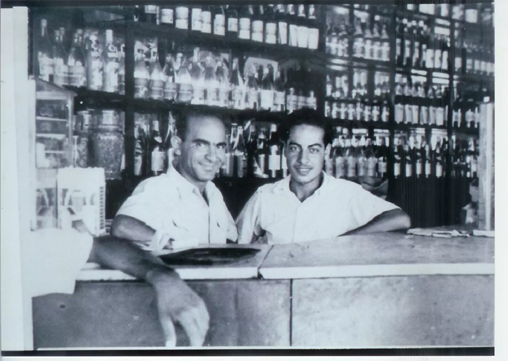
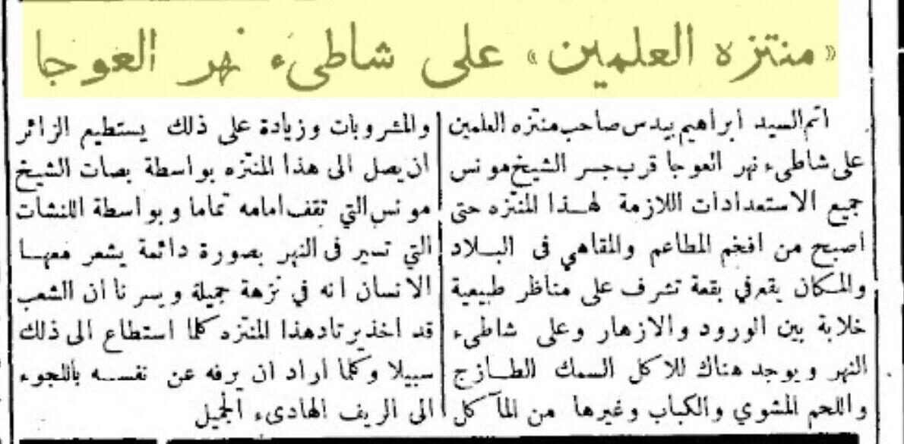
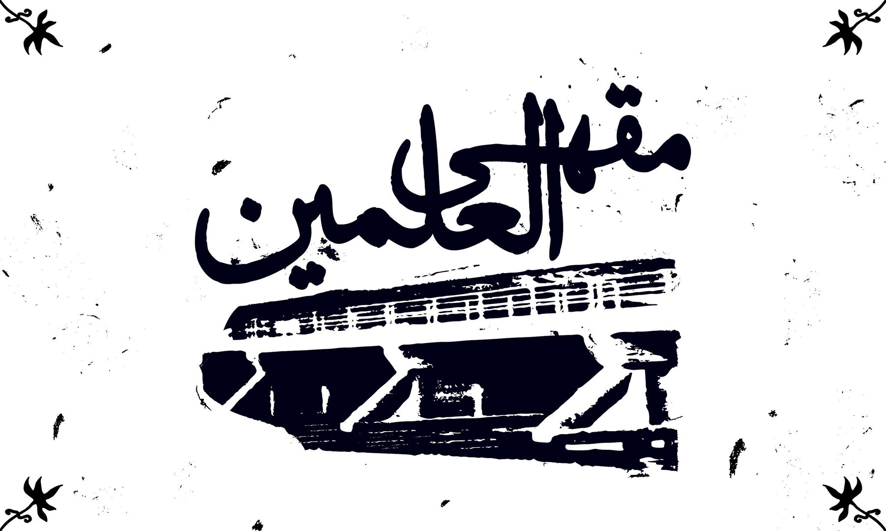
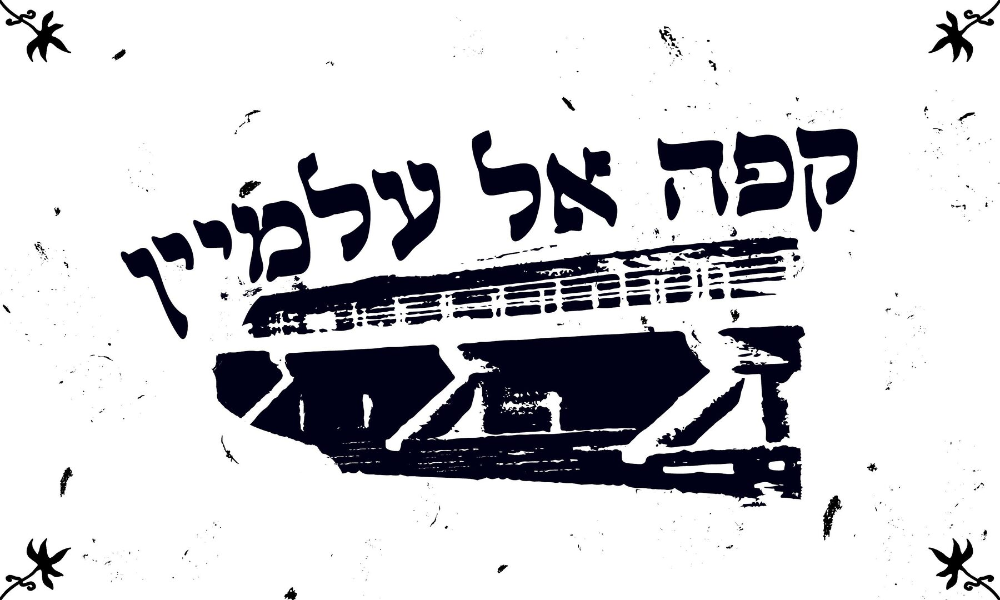
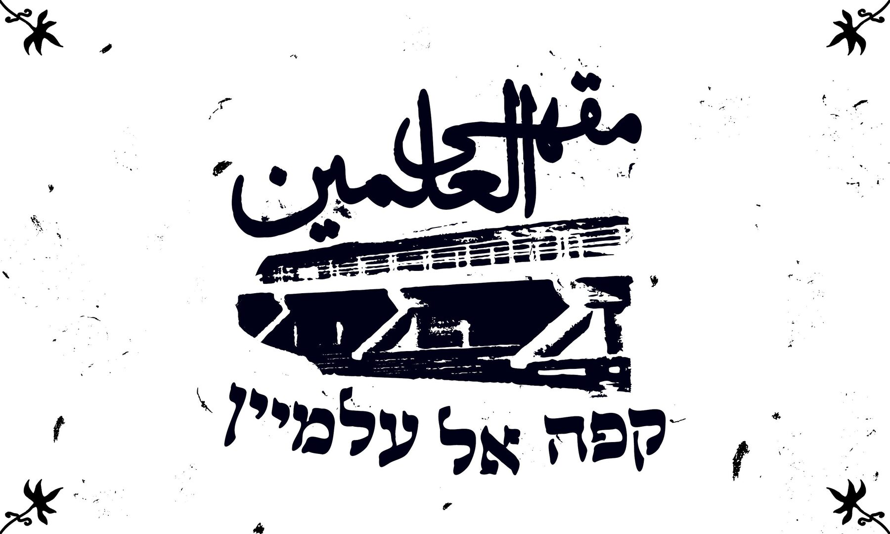
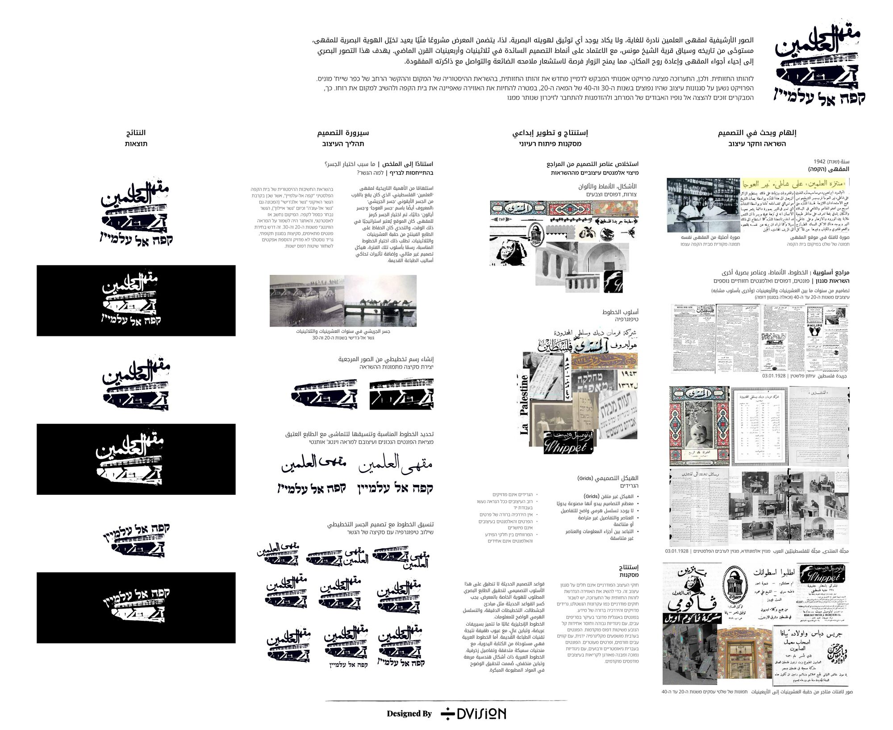
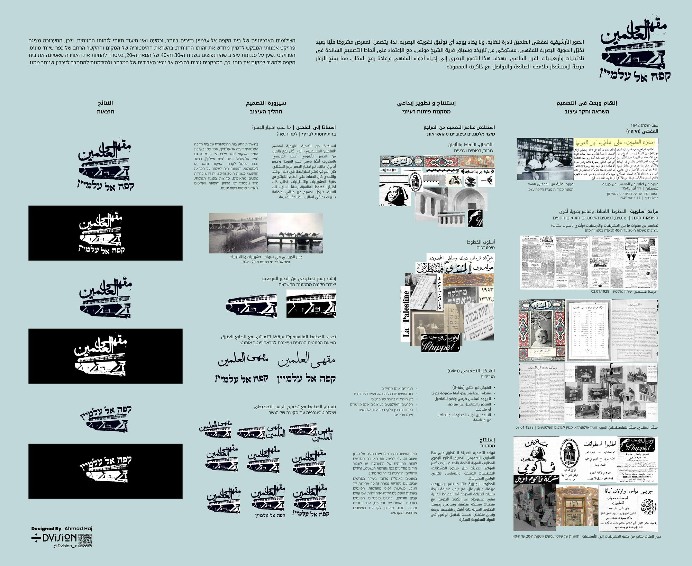
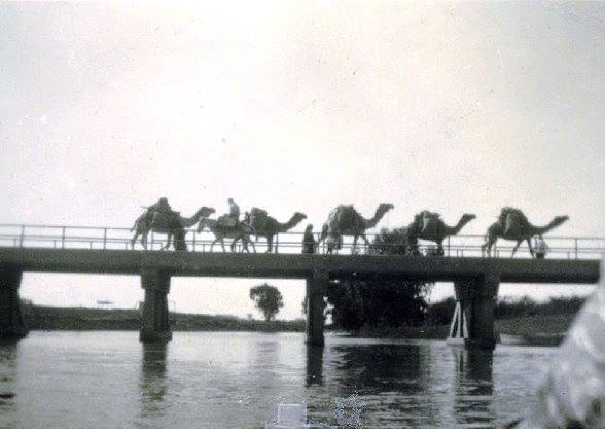
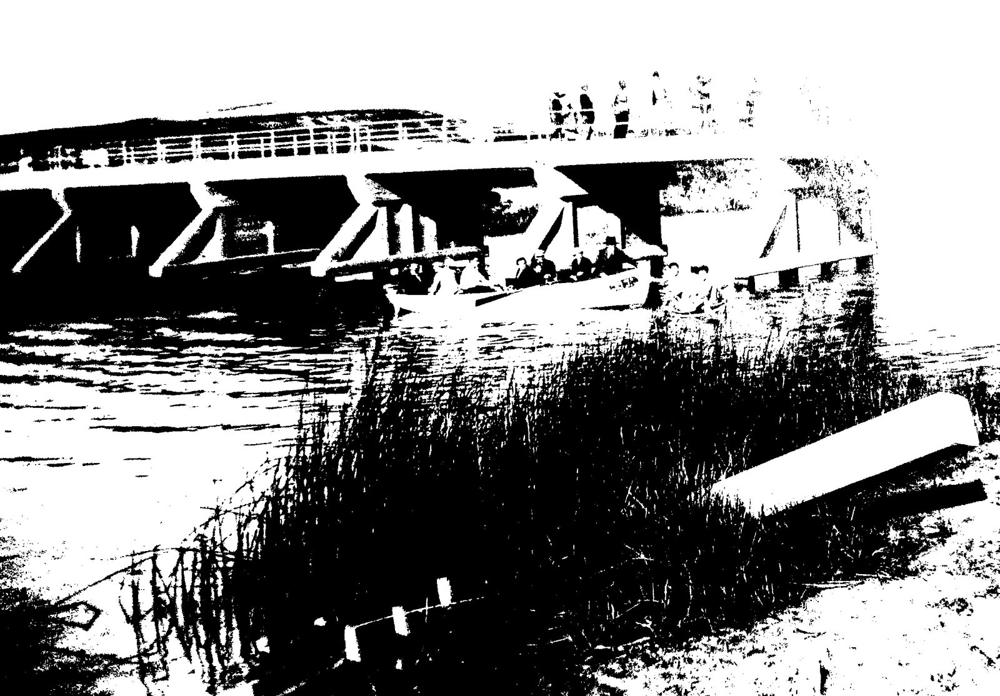

Al-Alamain Café
An identity for a café that was destroyed in 1948, imagined from what little survives of it.
- Exhibition
- Al-Alamain Café
- Curators
- Fadi Farr, Karim Yahya
- Venue
- Beit Barakat Cultural Centre, Jaffa
- Year
- 2025
- Scope
- Logotype, Arabic & Hebrew lettering, signage, exhibition boards

The café stood on the north bank of the Auja river, by the Jerisha bridge. It served the village of Shaykh Muwannis.
It belonged to Ibrahim Baidas. The bridge it sat beside connected the village to Jaffa, and the village drew part of its income from tolls collected there, so the café was never only a café — it was the point where the village met everyone passing through.
In 1948 Haganah forces took the bridge, destroyed the café and held the position. The village was cut off from the south, its supplies severed, and its residents left northward.


The brief
The exhibition reconstructs daily life in Shaykh Muwannis before 1948 — video work, architectural models, virtual walks through the village, all built on oral testimony from people who lived there and on archival maps and photographs.
Designers were asked to imagine the visual identity the café might have had. Not to reconstruct it, because almost nothing survives, but to build something plausible for the period. I worked from pre-1948 Palestinian and Levantine sign painting, newspaper advertising of the time, and the 1942 photograph.
The mark
Arabic above, Hebrew below, with the bridge holding the two apart and together. Both lines are drawn by hand rather than typeset, because a sign painter would have drawn them, and because the two scripts needed to come from the same wrist to sit properly on one board.
Everything is printed with wear built in — broken edges, filled counters, ink spread. A sign that had been outside on a river bank for a decade would not have looked clean.



The accounts contradict each other. I kept the roughness rather than designing it out.
Who owned the café is disputed. One account gives Baidas a Jewish partner, though nobody can say when he joined or on what terms. An archival image suggests alcohol was served, which raises its own questions about who drank there. Villagers repeatedly mention the café burning, but not who set the fire.
None of it resolves. The identity is presented as a proposal, not a finding.



